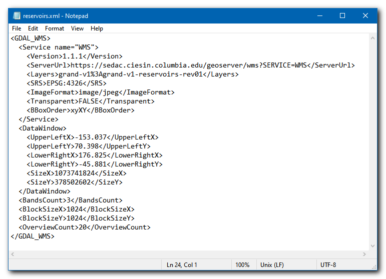

Mastering GDAL Tools (Full Course Material)
Satellite and aerial image processing using GDAL tools
Ujaval Gandhi
- Introduction
- Get the Data Package
- Software
- Getting Familiar with the Command Prompt
- 1. GDAL Tools
- 2. OGR Tools
- 3. Multi Criteria Weighted Overlay Analysis
- 4. Running commands in batch
- Supplement
- Resources
- Data Credits
- License

Introduction
GDAL is an open-source library for raster and vector geospatial data formats. The library comes with a vast collection of utility programs that can perform many geoprocessing tasks. This class introduces GDAL and OGR utilities with example workflows for processing raster and vector data. The class also shows how to use these utility programs to build Spatial ETL pipelines and do batch processing.
Get the Data Package
The code examples in this class use a variety of datasets. All the required datasets are supplied to you in the gdal_tools.zip file. Unzip this file to the Downloads directory. All commands below assume the data is available in the <home folder>/Downloads/gdal_tools/ directory.
Not enrolled in our instructor-led class but want to work through the material on your own? Get free access to the data package
Software
This courses requires installing the GDAL package. Along with GDAL, we highly recommend installing QGIS to view the result of the command-line operations. You will find installation instructions for both the software below.
GDAL
The preferred method for installing the GDAL Tools is via Anaconda. Follow these steps to install Anaconda and the GDAL library.
Download the Anaconda Installer for Python 3.7 (or a higher version) for your operating system. Once downloaded, double click the installer and install it into the default suggested directory.
Note: If your username has spaces, or non-English characters, it causes problems. In that case, you can install it to a path such as C:\anaconda.

Windows
Once Anaconda installed, search for Anaconda Prompt in the Start Menu and launch a new window.
- Create a new environment named
gdal. When prompted to confirm, typeyand press Enter.
conda create --name gdalNote: You can use the shortcut Shift + Insert to paste commands in Anaconda Prompt.

- Activate the environment and install the
gdalpackage. When prompted to confirm, typeyand press Enter.
conda activate gdal
conda install -c conda-forge gdal
- Once the installation finishes, verify if you are able to run the GDAL tools. Type the following command and check if a version number is printed.
gdalinfo --versionThe version number displayed for you may be slightly different. As long as you do not get a
command not founderror, you should be set for the class.

Mac/Linux
Once Anaconda is installed, launch a Terminal window.
- Create a new environment named
gdal. When prompted to confirm, typeyand press Enter.
conda create --name gdal
- Activate the environment and install the
gdalpackage. When prompted to confirm, typeyand press Enter.
conda activate gdal
conda install -c conda-forge gdal
- Once the installation finishes, verify if you are able to run the GDAL tools. Type the following command and check if a version number is printed.
gdalinfo --versionThe version number displayed for you may be slightly different. As long as you do not get a
command not founderror, you should be set for the class.

QGIS
This course uses QGIS LTR version 3.16 for visualization of results. It is not mandatory to install QGIS, but highly recommended.
Please review QGIS-LTR Installation Guide for step-by-step instructions.
Getting Familiar with the Command Prompt
All the commands in the exercises below are expected to be run from the Anaconda Prompt on Windows or a Terminal on Mac/Linux. We will now cover basic terminal commands that will help you get comfortable with the environment
Windows
| Command | Description | Example |
|---|---|---|
cd |
Change directory | cd Downloads\gdal-tools |
cd .. |
Change to the parent directory | cd .. |
dir |
List files in the current directory | dir |
del |
Delete a file | del test.txt |
rmdir |
Delete a directory | rmdir /s test |
type |
Print the contents of a file | type test.txt |
> output.txt |
Redirect the output to a file | dir /b *.csv > output.txt |
cls |
Clear screen | cls |
Mac/Linux
| Command | Description | Example |
|---|---|---|
cd |
Change directory | cd Downloads/gdal-tools |
cd .. |
Change to the parent directory | cd .. |
ls |
List files in the current directory | ls |
rm |
Delete a file | rm test.txt |
rm -R |
Delete a directory | rm -R test |
cat |
Print the contents of a file | cat test.txt |
> output.txt |
Redirect the output to a file | ls *.csv > output.txt |
clear |
Clear screen | clear |
1. GDAL Tools
1.1 Basic Raster Processing
We will start learning the basic GDAL commands by processing elevation rasters from SRTM. In the Command Prompt window, use the cd command to change to the srtm directory which 4 individual SRTM tiles around the Mt. Everest region.
cd srtmUse the gdalinfo command to check the information about a single image.
gdalinfo N27E086.hgt
A useful parameter is -stats which computes and displays image statistics. Run it on the raster to get some statistics of pixel values in the image.
gdalinfo -stats N27E086.hgt
1.1.1 Merging Tiles
We will now merge the 4 neighboring SRTM tiles into 1 raster so we can work with them together. GDAL provides a useful format called Virtual Raster that allows us to create a Virtual file with .vrt extension that is a pointer to multiple source files. A .vrt file is just a text file, so it doesn’t consume any disk space but allows us to run any GDAL command as if it was a raster file.
First we need to create a text file containing all the files we want to merge. We can use the dir command on Windows prompt list the files matching the pattern *.hgt and redirect the output to a file. Here the /b option runs the command in the Bare mode which excludes all info except file names.
Windows
dir /b *.hgt > filelist.txtOn Mac/Linux systems, the same came be achieved using the ls command.
Mac/Linux
ls *.hgt > filelist.txtOnce the command finishes, verify that the filelist.txt has the names of the source tiles.

We can now use the gdalbuildvrt command to create a virtual raster from the source files in the filelist.txt.
gdalbuildvrt -input_file_list filelist.txt merged.vrt
Note: We could have done this operation in a single step using the command
gdalbuildvrt merged.vrt *.hgt. However, some versions of GDAL on Windows do not expand the*wildcard correctly and the command results in an error. It is recommended to use a filelist instead of wildcards with GDAL commands on Windows to avoid unexpeted results.[reference]
Exercise 1
Can you find out what is the highest elevation value in the merged raster? Since these rasters are around the Mt.Everest region, the MAXIMUM value will be the elevation of the summit.

1.1.2 Converting Formats
Let’s convert the Virtual Raster to a GeoTIFF file. gdal_translate program allows us to convert between any of the hundreds of data formats supported by GDAL. The format is automatically guessed from the file extension. Alternatively, you can also specify it using the -of option with the short name of the format such a GTiff.
gdal_translate -of GTiff merged.vrt merged.tif
1.1.3 Compressing Output
The default output GeoTIFF file is uncompressed - meaning each pixel’s value is stored on the disk without any further processing. For large rasters, this can consume a lot of disk space. A smarter approach is to use a lossless compression algorithm to reduce the size of the raster while maintaining full fidelity of the original data. GDAL supports many compression algorithm out-of-the-box and can be specified with GDAL commands using the -co option. The most popular loss-less compression algorithms are DEFLATE, LZW and PACKBITS. We can try the DEFLATE algorithm on our dataset.
gdal_translate -of GTiff merged.vrt merged.tif -co COMPRESS=DEFLATE
The uncompressed file size was 100+ MB. After applying the DEFLATE compression, the file size reduced to 72MB. We can further reduce the file size by specifying additional options. The PREDICTOR option helps compress data better when the neighboring values are correlated. For elevation data, this is definitely the case. The TILED option will compress the data in blocks rather than line-by-line.
gdal_translate -of GTiff merged.vrt merged.tif -co COMPRESS=DEFLATE -co TILED=YES -co PREDICTOR=2
The resulting file now comes out much smaller at 39MB. Check this article GeoTIFF compression and optimization with GDAL to learn more about various options and compression algorithms.
1.1.4 Setting NoData Values
The output from gdalinfo command shows that the original data has a NoData Value set to -32768. We can set a new NoData value. The -a_nodata option allows us to specify a new value.
gdal_translate -of GTiff merged.vrt merged.tif -co COMPRESS=DEFLATE -co TILED=YES -co PREDICTOR=2 -a_nodata -9999After running the command, you can verify the results using the gdalinfo command.
1.1.5 Wrting Cloud-Optimized GeoTIFF (COG)
A new format called Cloud-Optimized GeoTIFF (COG) is making access to such vast amount of imagery easier to access and analyze. A Cloud-optimized GeoTIFF is behaves just like a regular GeoTIFF imagery, but instead of downloading the entire image locally, you are able to access portions of imagery hosted on a cloud server streamed to clients like QGIS. This makes is very efficient to access this data and even analyze it - without downloading large files. GDAL makes it very easy to create COG files by specifying the -of COG option.
gdal_translate -of COG merged.vrt merged_cog.tif -co COMPRESS=DEFLATE -co PREDICTOR=2 -a_nodata -99991.2 Processing Elevation Data
GDAL comes with the gdaldem utility that provides a suite of tools for visualizing and analyzing Digital Elevation Models (DEM). The tool supports the following modes
- Hillshade
- Slope
- Aspect
- Color-relief
- Terrain Ruggedness Index (TRI)
- Topographic Position Index (TPI)
- Roughness
Am important point to note is that the x, y and z units of the DEM should be in the same unit. If you are using data in a Geographic CRS (like EPSG:4326) and the height units are meters, you must specify a scale value using -s option.
1.2.1 Creating Hillshade
Let’s create a hillshade map from the merged SRTM dataset. The hillshade mode creates an 8-bit raster with a nice shaded relief effect. This dataset has X and Y units in degrees and Z units in meters. So we specify 111120 as the scale value.
gdaldem hillshade merged.tif hillshade.tif -s 111120gdaldem supports multiple hillshading algorithms. Apart from the default, it currently includes the following algorithms.
- Combined shading (
-combined): A combination of slope and oblique shading. - Multidirectional shading (
-multidirectional): A combination of hillshading illuminated from 225 deg, 270 deg, 315 deg, and 360 deg azimuth.
Let’s create a hillshade map with the -multidirectional option.
gdaldem hillshade merged.tif hillshade_combined.tif -s 111120 -multidirectional
1.2.2 Creating Color Relief
A color relief map is an elevation map where different ranges of elevations are colored differently. The color-relief mode can create a color relief map with the colors and elevation ranges supplied in a text file.
Your data package contains a colormap.txt file with the following content. The format of the text file is elevation,red,green,blue values.
1000,101,146,82
1500,190,202,130
2000,241,225,145
2500,244,200,126
3000,197,147,117
4000,204,169,170
5000,251,238,253
6000,255,255,255We can supply this file to create a colorized elevation map.
gdaldem color-relief merged.tif colormap.txt colorized.tif
Color Relief
Exercise 2
Save the color relief in the PNG format.
1.2.3 Creating Contours
The GDAL package comes with the utility gdal_countour that can create contour lines and polygons from DEMs.
You can specify the interval between contour lines using the -i option.
gdal_contour merged.tif contours.gpkg -i 500
Contour Lines from DEM
Running the command with default options generate a vector layer with contours but they do not have any attributes. If you want to label your contour lines in your map, you may want to create contours with elevation values as attribute. You can use the -a option and specify the name of the attribute.
gdal_contour merged.tif contours.gpkg -i 500 -a elevContour Lines with Elevation Attribute
Exercise 3
Create polygon contours shapefile from merged.tif and name the attributes MINELEV and MAXELEV represented by each polygon.
1.3 Processing Aerial Imagery
Use the cd command to change to the naip directory which contains individual aerial imagery tiles in the JPEG2000 format.
cd naip1.3.1 Create a preview image from source tiles
The source imagery is heavily compressed and cover a large region. Instead of loading the full resolution tiles in a viewer, it is a good practice to create a preview mosaic that can help us assess the coverage and quality of the data.
We first create a Virtual Raster mosaic from all the .jp2 tiles. We can create a text file containing all the files we want to merge.
Windows
dir /b *.jp2 > filelist.txtMac/Linux
ls *.jp2 > filelist.txt
Text File with the List of Images
gdalbuildvrt -input_file_list filelist.txt naip.vrtWe can use the -outsize option and specify a percentage to generate a smaller size preview. The below command generates a 2% preview image in the JPEG format.
gdal_translate -of JPEG -outsize 2% 2% naip.vrt naip_preview.jpg 
1.3.2 Create a Tile Index
When working with large amounts of imagery tiles, it is useful to generate a tile index. A tile index layer is a polygon layer with the bounding box of each tile. An index layer allows us to check the coverage of the source data and locate specific tiles. It is a simple but effective way to catalog raster data from a hard drive or from a folder on your computer.
gdaltindex command creates a tile index from a list of input files. Here we can use the --optfile option to supply the list of files via a file.
gdaltindex -write_absolute_path index.shp --optfile filelist.txt1.3.3 Mosaic and clip to AOI
Let’s say we want to mosaic all the source tile into a single image. We also want to clip the mosaic to a given AOI.

We can use the gdalwarp utility to clip the raster using the -cutline option. We can also add JPEG compression to the output file to reduce the file size. Refer to the post GeoTiff Compression for Dummies by Paul Ramsey that gives more insights into compression imagery.
Note that JPEG is a lossy compression method and is suited only for photographic rasters such as aerial/drone imagery. For scientific datasets, you should always use lossless compression as shown in the previous section.
gdalwarp -cutline aoi.shp -crop_to_cutline naip.vrt aoi.tif -co COMPRESS=JPEG -co TILED=YES -co PHOTOMETRIC=YCBCR
1.3.4 Tips for Improving Performance
gdalwarp utility supports multithreaded processing. There are 2 different options for parallel processing.
-multi: This option parallelizes I/O and CPU operations.-wo NUM_THREADS=ALL_CPUS: This option parallelizes CPU operations over several cores.
There is also another option that allows gdalwarp to use more RAM for caching. This option is very helpful to speed up operations on large rasters
-wm: Set a higher memory for caching
All of these options can be combined that may result in faster processing of the data.
gdalwarp -cutline aoi.shp -crop_to_cutline naip.vrt aoi.tif -co COMPRESS=JPEG -co TILED=YES -co PHOTOMETRIC=YCBCR -multi -wo NUM_THREADS=ALL_CPUS -wm 5121.3.5 Creating Overviews
If you try loading the resulting raster into a viewer, you will notice that it takes a lot of time for it to render. Zoom/Pan operations are quite slow as well. This is because the viewer is rendering all the pixels at native resolution. Since this is a very high resolution dataset, it requires processing a lot of pixels, even if you are zoomed out. A common solution to this problem is to create Pyramid Tiles or Overviews. This process creates low resolution versions of the image by averaging pixel values from higher resolution pixels. If the pyramid tiles are present, imagery viewers can use it to speed up the rendering process. GDAL provides the utility gdaladdo to create overview tiles. GeoTIFF format supports storing the overviews within the file itself. For other formats, the program generates external overviews in the .ovr format.
You can run the gdaladdo (GDAL-Add-Overview) command with default options to create internal overviews. Once the overviews are created, try opening the aoi.tif in QGIS. You will see that it renders much faster and zoom/pan operations are very smooth.
gdaladdo aoi.tifThe default overviews use the nearest neighbor resampling. We can pick any resampling method from the many available algorithms. We can try the bilinear interpolation using the -r bilinear option. Since the source imagery is JPEG compressed, we can compress the overviews with the same compression.
gdaladdo -r bilinear --config COMPRESS_OVERVIEW JPEG aoi.tif1.4 Processing Satellite Imagery
This section shows how to take satellite data from Landsat-8 and create various derived products. Use the cd command to change to the landsat8 directory which contains Landsat-8 imagery. This directory has 5 individual GeoTIFF files for 5 different bands from a single landsat-8 scene.
cd landsat81.4.1 Merging individual bands into RGB composite
Let’s create a RGB composite image by combining thee 3 different bands - Red, Green and Blue - into a single image. We can use the gdal_merge.py command to merge different images. Here we must use the -separate option which tells the command to place each image in a separate band.
gdal_merge.py -o rgb.tif -separate -co PHOTOMETRIC=RGB -co COMPRESS=DEFLATE RT_LC08_L1TP_137042_20190920_20190926_01_T1_2019-09-20_B4.TIF RT_LC08_L1TP_137042_20190920_20190926_01_T1_2019-09-20_B3.TIF RT_LC08_L1TP_137042_20190920_20190926_01_T1_2019-09-20_B2.TIFOnce the command finishes, you can view the result in QGIS.

1.4.2 Apply Histogram Stretch and Color Correction
The resulting composite appears quite dark and has low-contrast. QGIS applies a default contrast stretch based on the minimum and maximum values in the image. Due to the presence of clouds and cloud-shadows - there are outlier pixels which make the default contrast stretch not optimal.
Here’s what the histogram of the RGB composite looks like.

We can apply a histogram stretch to increase the contrast. This is done using the -scale option. Since most of the pixels have a value between 0 and 0.3, we can choose these are minimum and maximum values and apply a contrast stretch to make them go from 0 to 255. The resulting image will be a 8-bit color image where the input pixel values are linearly scaled to the target value.
Note: Scaling the image will alter the pixel values. The resulting image is suitable for visualizaion, but they should never be used for analysis. Scientific analysis should always use the un-scaled pixel values.
gdal_translate -scale 0 0.3 0 255 -ot Byte rgb.tif rgb_stretch.tif
RGB Composite with Linear Stretch
We can also apply a non-linear stretch. gdal_translate has a -exponent option that scales the input values using the following formula. Choosing an exponent value between 0 and 1 will enhance low intensity values - resulting in a brighter image. Learn more ↗
Let’s try exponent value of 0.5. The result is a much better looking output.
gdal_translate -scale 0 0.3 0 255 -exponent 0.5 -ot Byte rgb.tif rgb_stretch.tif
RGB Composite with Exponential Stretch
Exercise 4
Create a NRG Composite image with Near Infrared, Red and Green bands. Apply a contrast stretch to the result and save it as a PNG image.

NRG Composite
1.4.3 Pan Sharpening
Most satellite and airborne sensors capture images in the Pan-chromatic band along with other spectral bands. The Red, Green, and Blue bands capture signals in the Red, Green, and Blue portions of the electromagnetic spectrum respectively. But the Pan-band captures the data across the entire range of wavelengths in the visible spectrum. This allows the sensor to capture the data in a higher spatial resolution than other bands which capture the signal from a subset of this wavelength range.
Landsat-8 satellite produces images at a 30m spatial resolution in the Red, Green, Blue bands and at a 15m spatial resolution in the Panchromatic band. We can use the higher spatial resolution of the Panchromatic band to improve the resolution of the other bands, resulting in sharper image with more details. This process is called Pan-Sharpening.
GDAL comes with a script gdal_pansharpen.py that implements the Brovey algorithm to compute the pansharpened output. In the example below we fuse the 15m resolution panchromatic band (B8) with the RGB composite created in the previous step.
gdal_pansharpen.py RT_LC08_L1TP_137042_20190920_20190926_01_T1_2019-09-20_B8.TIF rgb.tif pansharpened.tif -r bilinear -co COMPRESS=DEFLATE -co PHOTOMETRIC=RGBWe can apply the same contrast stretch as before and compare the output. You will notice that the resulting composite is much sharper and is able to resolve the details in the scene much better.
gdal_translate -scale 0 0.3 0 255 -exponent 0.5 -ot Byte -a_nodata 0 pansharpened.tif pansharpened_stretch.tif

1.4.4 Raster Algebra
gdalinfo -stats landsat8/RT_LC08_L1TP_137042_20190920_20190926_01_T1_2019-09-20_B4.TIFIt is important to set nodata value. As seen from the output above, nodata is set to -9999.
gdal_calc.py -A RT_LC08_L1TP_137042_20190920_20190926_01_T1_2019-09-20_B5.TIF -B RT_LC08_L1TP_137042_20190920_20190926_01_T1_2019-09-20_B4.TIF --outfile ndvi.tif --calc="(A-B)/(A+B)" --NoDataValue=-9999
1.5 Processing WMS Layers
gdalinfo WMS:http://sedac.ciesin.columbia.edu/geoserver/wmsGlobal Reservoir and Dam (GRanD), v1
gdalinfo "WMS:https://sedac.ciesin.columbia.edu/geoserver/wms?SERVICE=WMS&VERSION=1.1.1&REQUEST=GetMap&LAYERS=lulc%3Alulc-global-grid-prob-urban-expansion-2030&SRS=EPSG:4326&BBOX=-179.99997803468415,-55.922762245435266,180.02788233587063,83.97845284575614"
gdal_translate -of WMS "WMS:https://sedac.ciesin.columbia.edu/geoserver/wms?SERVICE=WMS&VERSION=1.1.1&REQUEST=GetMap&LAYERS=grand-v1:Agrand-v1-reservoirs-rev01" reservoirs.xml
gdal_translate -outsize 3600 1800 "WMS:https://sedac.ciesin.columbia.edu/geoserver/wms?SERVICE=WMS&VERSION=1.1.1&REQUEST=GetMap&LAYERS=grand-v1%3Agrand-v1-reservoirs-rev01&SRS=EPSG:4326&BBOX=-153.037,-45.881,176.825,70.398" reservoirs.tifSpecify a Bounding Box for India
gdal_translate -outsize 10000 10000 "WMS:https://sedac.ciesin.columbia.edu/geoserver/wms?SERVICE=WMS&VERSION=1.1.1&REQUEST=GetMap&LAYERS=grand-v1%3Agrand-v1-reservoirs-rev01&SRS=EPSG:4326&BBOX=68.106,6.762,97.412,37.078" reservoirs_india.tif
1.6 Georeferencing
GDAL command-line utilities are extremely useful in batch georeferencing tasks. We will learn 2 different techniques for georeferencing/warping images.
1.6.1 Georeferencing Images with Bounding Box Coordinates
Often you get images from web portals that are maps but lack georeference information. Data from weather satellites, output from simulations, exports from photo editing software etc. can contain images that reference a fixed frame on the earth but are given in a regular image formats such as JPEG or PNG. If you know the bounding box coordinates and the CRS used in creating these images, you can use gdal_translate command to assign georeference information. The -a_ullr option allows you to specify the bounding box coordinates using the Upper-Left (UL) and Lower-Right (LR) coordinates.
Your data package contains the image file earth_at_night.jpg. This is a beautifully rendered image of the earth captured at night time. You will see that this is a plain JPEG image without any georeference information.
gdalinfo earth_at_night.jpgSince this is a global image, we know the corner coordinates. We can assign the CRS EPSG:4326 using the -a_srs option and specify the bounding box coordinates in the following order <ulx> <uly> <lrx> <lry>.
gdal_translate -a_ullr -180 90 180 -90 -a_srs EPSG:4326 earth_at_night.jpg earth_at_night.tif -co COMPRESS=JPEG -co TILED=YES -co PHOTOMETRIC=RGBThe resulting file earth_at_night.tif is a GeoTiff file with the correct georeference information and can now be used in a GIS software.
gdalinfo earth_at_night.tif
1.6.2 Georeferencing with GCPs
Another option for georeferencing images it to use Ground Control Points (GCPs) or Tie-Points. A GCP specifies the real-world coordinates for a given pixel in the image. The GCPs can be obtained by reading the map markings or locating landmarks from a georeferenced source. Given a set of GCPs, gdalwarp can georeference the image using a variety of transformation types.
Your data package contain an image of a old scanned map called 1870_southern_india.jpg.

The map contain graticule lines with latitude and longitude information that can be read from the image. We can read the coordinate values at the grid intersections and find that pixel’s image coordinates
| pixel (column) | line (row) | X (Longitude) | Y (Latitude) |
|---|---|---|---|
| 418 | 893 | 70 | 15 |
| 380 | 2432 | 70 | 5 |
| 3453 | 2434 | 90 | 5 |
| 3407 | 895 | 90 | 15 |
| 2662 | 911 | 85 | 15 |
The first step is to store these GCPs in the image metadata using gdal_translate command.
gdal_translate -gcp 418 893 70 15 -gcp 380 2432 70 5 -gcp 3453 2434 90 5 -gcp 3407 895 90 15 -gcp 2662 911 85 15 1870_southern-india.jpg india-with-gcp.tifNow that the GCPs are stored in the image, we are ready to do the georeferencing. Assuming the CRS of the map is a Geographic CRS based on the Everest 1830 datum, we choose EPSG:4042 as the target CRS.
Next, we need to choose the transformation type. gdalwarp supports the following transformation types
- Polynomial 1,2 or 3 using
-orderoption - Thin Plate Spline using the
-tpsoption
Let’s try Polynomial 1 transformation and check the results.
gdalwarp -t_srs EPSG:4042 -order 1 -tr 0.005 0.005 india-with-gcp.tif india-reprojected-polynomial.tif -co COMPRESS=JPEG -co JPEG_QUALITY=50 -co PHOTOMETRIC=YCBCRWe can use the same GCPs and do a Thin-plate-spline transformation.
gdalwarp -t_srs EPSG:4042 -tps -tr 0.005 0.005 india-with-gcp.tif india-reprojected-tps.tif -co COMPRESS=JPEG -co JPEG_QUALITY=50 -co PHOTOMETRIC=YCBCR
2. OGR Tools
2.1 Working with CSV files
ogrinfo worldcities.csv
ogrinfo -so -al worldcities.csv
ogrinfo -so -al worldcities.csv -oo X_POSSIBLE_NAMES=lng -oo Y_POSSIBLE_NAMES=lat
ogr2ogr -f GPKG worldcities.gpkg worldcities.csv -oo X_POSSIBLE_NAMES=lng -oo Y_POSSIBLE_NAMES=lat 
ogr2ogr -f GPKG worldcities.gpkg worldcities.csv -oo X_POSSIBLE_NAMES=lng -oo Y_POSSIBLE_NAMES=lat -a_srs EPSG:4326
ogr2ogr -f GPKG mycities.gpkg worldcities.csv -oo X_POSSIBLE_NAMES=lng -oo Y_POSSIBLE_NAMES=lat -a_srs EPSG:4326 -where "country = 'India'"
ogr2ogr -f GPKG mycities.gpkg worldcities.csv -oo X_POSSIBLE_NAMES=lng -oo Y_POSSIBLE_NAMES=lat -a_srs EPSG:4326 -sql "SELECT city, country, CAST(population AS integer) as population from worldcities where country = 'India'"
ogr2ogr -f GPKG mycities.gpkg worldcities.csv -oo X_POSSIBLE_NAMES=lng -oo Y_POSSIBLE_NAMES=lat -a_srs EPSG:4326 -sql "SELECT city, country, CAST(population AS integer) as population from worldcities where country = 'India'" -nln mycities
2.2 Working with Multiple Layers
2.2.1 Read Geonames Files
<OGRVRTDataSource>
<OGRVRTLayer name="CA">
<SrcDataSource>CSV:CA.txt</SrcDataSource>
<SrcLayer>CA</SrcLayer>
</OGRVRTLayer>
</OGRVRTDataSource>ogrinfo -al -so CA.vrt2.2.2 Applying Filters
<OGRVRTDataSource>
<OGRVRTLayer name="CA">
<SrcDataSource>CSV:CA.txt</SrcDataSource>
<SrcLayer>CA</SrcLayer>
<SrcSQL>select * from CA where "FEATCLASS" = 'T'</SrcSQL>
</OGRVRTLayer>
</OGRVRTDataSource>ogrinfo -al -so CA.vrt2.2.3 Merging Files
<OGRVRTDataSource>
<OGRVRTUnionLayer name="NA">
<OGRVRTLayer name="CA">
<SrcDataSource>CSV:CA.txt</SrcDataSource>
<SrcLayer>CA</SrcLayer>
<SrcSQL>select * from CA where "FEATCLASS" = 'T'</SrcSQL>
</OGRVRTLayer>
<OGRVRTLayer name="MX">
<SrcDataSource>CSV:MX.txt</SrcDataSource>
<SrcLayer>MX</SrcLayer>
<SrcSQL>select * from MX where "FEATCLASS" = 'T'</SrcSQL>
</OGRVRTLayer>
<OGRVRTLayer name="US">
<SrcDataSource>CSV:US.txt</SrcDataSource>
<SrcLayer>US</SrcLayer>
<SrcSQL>select * from US where "FEATCLASS" = 'T'</SrcSQL>
</OGRVRTLayer>
</OGRVRTUnionLayer>
</OGRVRTDataSource>ogr2ogr -f GPKG NA.gpkg NA.vrt2.2.4 Geoprocessing and Spatial Queries
ogr2ogr -t_srs EPSG:7855 spatial_query.gpkg spatial_query.gpkg bars_and_pubs -update -nln bars_and_pubs_reprojected
ogr2ogr -t_srs EPSG:7855 spatial_query.gpkg spatial_query.gpkg metro_stations -update -nln metro_stations_reprojectedogr2ogr spatial_query.gpkg spatial_query.gpkg -update -nln metro_stations_buffer -sql "select m.station, buffer(m.geom, 500) as geom from metro_stations_reprojected m" -dialect SQLITE You can dissolve the buffers using ST_COLLECT
ogr2ogr spatial_query.gpkg spatial_query.gpkg -update -nln metro_stations_buffer_dissolved -sql "select st_union(d.geom) as geom from (select st_collect(buffer(m.geom, 500)) as geom from metro_stations_reprojected m) as d" -dialect SQLITEogr2ogr -t_srs EPSG:4326 spatial_query.gpkg spatial_query.gpkg -update -nln selected -sql "select b.* from bars_and_pubs_reprojected as b join metro_stations_buffer_dissolved as m on ST_Within( b.geom, m.geom)" -dialect SQLITE 3. Multi Criteria Weighted Overlay Analysis
Multi-criteria analysis is the process of the allocation of land to suit a specific objective on the basis of a variety of attributes that the selected areas should possess.
Although this is a common GIS operation, it is best performed in the raster space. Below is the typical workflow to take source vector data, transform them to appropriate rasters, re-classify them and perform mathematical operations to do a suitability analysis.
We will work with crime and infrastructure data for the city of London and find suitable areas to build new parking facilities that can help reduce bicycle thefts. Our analysis will apply the following 3 criteria. The proposed parking must be
- In a bicycle theft hotspot
- Close to a bicycle route
- Far from existing parking facilities
3.1 Rasterize vector layers
For overlay analysis, all rasters must be of the same extent. So we first find the extent of the dataset that we can use while rasterizing.
ogrinfo multicriteria.gpkgogrinfo -so multicriteria.gpkg boundarygdal_rasterize -burn 1 -add -tr 100 100 -te 523843.7 177847.3 531169.1 183893.8 multicriteria.gpkg -l bicycle_thefts thefts.tif -ot Int16gdal_rasterize -ot Int16 -burn 1 -tr 10 10 -te 523843.7 177847.3 531169.1 183893.8 multicriteria.gpkg -l cycling_routes routes.tif
gdal_rasterize -ot Int16 -burn 1 -tr 10 10 -te 523843.7 177847.3 531169.1 183893.8 multicriteria.gpkg -l cycle_parking existing_parking.tif3.2 Generate proximity (Euclidean distance) rasters
gdal_proximity.py routes.tif outes_proximity.tif -ot Int16 -distunits GEO
gdal_proximity.py existing_parking.tif existing_parking_proximity.tif -ot Int16 -distunits GEO3.3 Re-classify raster values
| Thefts | Routes | Existing Parking | Re-Class Value |
|---|---|---|---|
| > 20 | 0-50m | > 100m | 100 |
| 10-20 | 50-100m | 50-100m | 50 |
| < 10 | > 100m | < 50m | 10 |
gdal_calc.py -A thefts.tif --outfile thefts_reclass.tif --calc="100*(A>20) + 50*(A>10)*(A<=20) + 10*(A<10)"
gdal_calc.py -A routes_proximity.tif --outfile routes_reclass.tif --calc="100*(A<=50) + 50*(A>50)*(A<=100) + 10*(A>100)"
gdal_calc.py -A existing_parking_proximity.tif --outfile existing_parking_reclass.tif --calc="100*(A>100) + 50*(A>50)*(A<=100) + 10*(A<50)"3.4 Overlay analysis
Roads and Water have a range of values, but protected areas are either 0 or 1. So we combine these together accordingly.
gdalwarp -r average -tr 100 100 existing_parking_reclass.tif parking_reclass_resampled.tif
gdalwarp -r average -tr 100 100 routes_reclass.tif routes_reclass_resampled.tifgdal_calc.py -A thefts_reclass.tif -B routes_reclass_resampled.tif -C parking_reclass_resampled.tif --outfile suitability.tif --calc="(A + B + C)/3" --NoDataValue=04. Running commands in batch
You can run the GDAL/OGR commands in a loop using Python. Say you want to convert the format of the images from JPEG200 to GeoTiff. You would run a command such as below.
gdal_translate -of GTiff -co COMPRESS=JPEG {input} {output}But it would be a lot of manual effort if you want to run the commands on hundreds of input files. Here’s where a simple python script can help you automate running the commands in a batch. The data directory contains a file called batch.py with the following python code.
import os
input_dir = 'naip'
command = 'gdal_translate -of GTiff -co COMPRESS=JPEG {input} {output}'
for file in os.listdir(input_dir):
if file.endswith('.jp2'):
input = os.path.join(input_dir, file)
filename = os.path.splitext(os.path.basename(file))[0]
output = os.path.join(input_dir, filename + '.tif')
os.system(command.format(input=input, output=output))In OsGeo4W shell, run the following command to start batch processing on all tiles contained in the naip/ directory.
python3 batch.pyThe data directory also contains an example of running the batch commands in parallel using python’s built-in multiprocessing library. If your system has multi-core CPU, running commands in parallel like this on multiple threads can give you performance boost over running them in series.
import os
from multiprocessing import Pool
from timeit import default_timer as timer
input_dir = 'naip'
command = 'gdal_translate -of GTiff -co COMPRESS=JPEG {input} {output}'
def process(file):
input = os.path.join(input_dir, file)
filename = os.path.splitext(os.path.basename(file))[0]
output = os.path.join(input_dir, filename + '.tif')
os.system(command.format(input=input, output=output))
files = [file for file in os.listdir(input_dir) if file.endswith('.jp2')]
if __name__ == '__main__':
start = timer()
p = Pool(4)
p.map(process, files)
end = timer()
print(end - start)
start = timer()
for file in files:
process(file)
end = timer()
print(end - start)The script runs the commands both in parallel and serial mode and prints the time taken by each of them.
python3 batch-parallel.pySupplement
Creating Colorized Hillshade
If you want to merge hillshade and color-relief to create a colored shaded relief map, you can use use gdal_calc.py to create do gamma and overlay calculations to combine the 2 rasters. 1
gdal_calc.py -A hillshade.tif --outfile=gamma_hillshade.tif \
--calc="uint8(((A / 255.)**(1/0.5)) * 255)"gdal_calc.py -A gamma_hillshade.tif -B colorized.tif --allBands=B \
--calc="uint8( ( \
2 * (A/255.)*(B/255.)*(A<128) + \
( 1 - 2 * (1-(A/255.))*(1-(B/255.)) ) * (A>=128) \
) * 255 )" --outfile=colorized_hillshade.tif
Colorized Shaded Relief
Splitting a Mosaic into Tiles
When delivering large mosaics, it is a good idea to split your large input file into smaller chunks. If you are working with a very large mosaic, splitting it into smaller chunks and processing them independently can help overcome memory issues. GDAL ships with a handy script called gdal_retile.py that is designed for this task.
Let’s say we have a large GeoTIFF file aoi.tif and want to split it into tiles of 5000 pixels. We can use the following command to split the file and write the output to a directory named tiles/.
gdal_retile.py -targetDir tiles -ps 5000 5000 aoi.tifResources
- GDAL Tips
@gdaltipson Twitter
Data Credits
- OpenStreetMap (osm) data layers: Data/Maps Copyright 2019 Geofabrik GmbH and OpenStreetMap Contributors. OSM India free extract downloaded from Geofabrik.
- Landsat: Landsat-8 image courtesy of the U.S. Geological Survey. Image downloaded from Google Cloud Platform and pre-processed using Semi Automatic Classification Plugin from QGIS
- Earth at Night image: Credit: NASA Earth Observatory/NOAA NGDC. Earth at Night flat hi-resolution map downloaded from NASA earth observatory
- William Mackenzie 1870 map of Southern India: out-of-copyright scanned map downloaded from Hipkiss’s Scanned Old Maps
- NAIP 2016 Aerial Imagery for California: The National Agriculture Imagery Program (NAIP). USDA-FSA-APFO Aerial Photography Field Office. Downloaded from NRCS
License
This course material is licensed under a Creative Commons Attribution-NonCommercial 4.0 International License. You are free to use the material for any non-commercial purpose. Kindly give appropriate credit to the original author.
© 2020 Ujaval Gandhi www.spatialthoughts.com
This course is offered as an instructor-led online class. Visit Spatial Thoughts to know details of upcoming sessions.